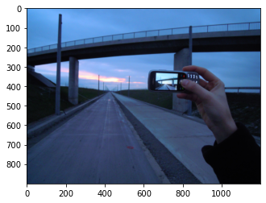
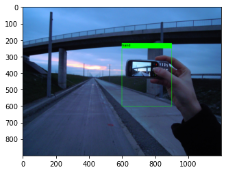

Play with Images
Chitrais an image utility class that can load image from filelike object, web url or numpy image. It offers drawing bounding box over the image.
# pip install -U chitra==0.1.0b3
from chitra.image import Chitra
import matplotlib.pyplot as plt
What can it do?
- Load image from file, filelike object, web url, or numpy array
- Plot image
- Plot bounding boxes along with labels in no extra code.
- Specify bounding box format:
- Center(xywh): center x,y and height width of bbox
- Corner(xyxy): xmin ymin and xmax ymax
- Plot bounding box on image
Load image from web url and show
url = "https://upload.wikimedia.org/wikipedia/commons/thumb/b/b6/Image_created_with_a_mobile_phone.png/1200px-Image_created_with_a_mobile_phone.png"
image = Chitra(url)
image.imshow()

You can cache the image downloaded from internet URL by passing cache=True in argument.
Second call to the same URL will not download from internet, instead image will be loaded from the local cache dir.
# first call - image will be downloaded from internet and saved to local cache dir
image = Chitra(url, cache=True)
# second call - image will be loaded from local cached dir
image = Chitra(url, cache=True)
Plot bounding box and label for the handphone
box = [[600, 250, 900, 600.1]]
label = ['handphone']
image = Chitra(url, box, label)
image.image = image.image.convert('RGB')
plt.imshow(image.draw_boxes())

Resize Image and Bounding at the same time
Chitra can rescale your bounding box automatically based on the new image size.
box = [[600, 250, 900, 600.1]]
label = ['handphone']
image = Chitra(url, box, label)
image.resize_image_with_bbox((224, 224))
print(image.bounding_boxes)
plt.imshow(image.draw_boxes())
Last update: July 4, 2021